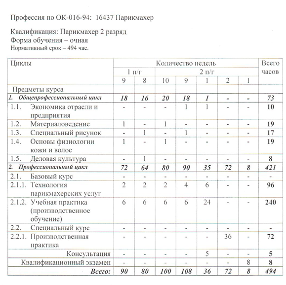
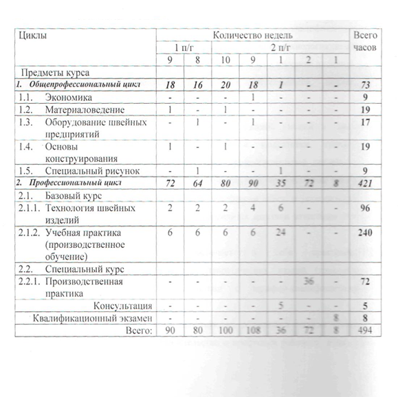
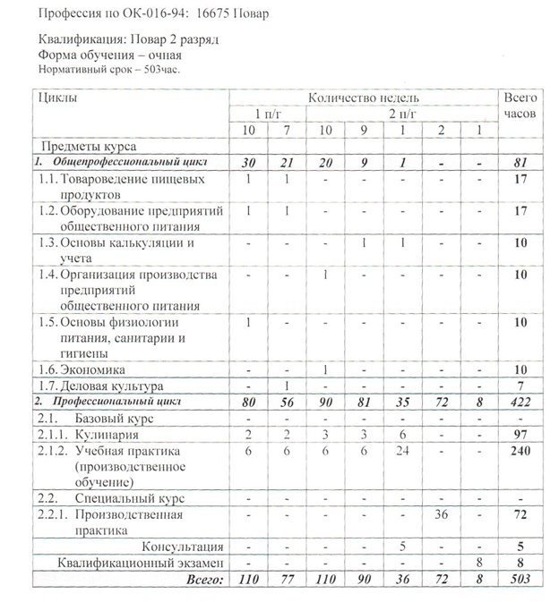

Дата создания и краткая историческая справка
Федерального государственное бюджетное профессиональное образовательное учреждение
«Улан-Удэнское специальное учебно-воспитательное учреждение для обучающихся с девиантным
(общественно опасным) поведением закрытого типа» образовано согласно приказам Государственного
комитета Совета Министров РСФСР по
профессионально-техническому образованию от 3 июня 1969 г. № 192 и Управления
профессионально-технического образования Бурятской АССР от 15 августа 1969 г. №165 как специальное
профессионально-техническое училище № 12, которое внесено в Единый государственный реестр
юридических лиц 26 сентября 2000 года как Государственное образовательное учреждение «Специальное
профессиональное училище № 1 закрытого типа г. Улан-Удэ Республики Бурятия».
Приказом Федерального агентства по образованию от 21 марта 2007 г. № 534 Государственное
образовательное учреждение «Специальное профессиональное училище № 1 закрытого типа г. Улан-Удэ
Республики Бурятия» переименовано в Федеральное государственное специальное учебно-воспитательное
учреждение для детей и подростков с девиантным поведением «Специальное профессиональное училище № 1
закрытого типа г. Улан-Удэ Республики Бурятия», которое приказом Министерства образования и науки
Российской Федерации от 30 мая 2011 г. № 1944 переименовано в федеральное государственное бюджетное
специальное учебно-воспитательное учреждение для детей и подростков с девиантным поведением
«Специальное профессиональное училище № 1 закрытого типа г. Улан-Удэ Республики Бурятия».
Приказом Министерства образования и науки Российской Федерации от 12 февраля 2016 г. № 116
федеральное государственное бюджетное специальное учебно-воспитательное учреждение для детей и
подростков с девиантным поведением «Специальное профессиональное училище № 1 закрытого типа г.
Улан-Удэ Республики Бурятия» переименовано в федеральное государственное бюджетное профессиональное
образовательное учреждение «Улан-Удэнское специальное учебно-воспитательное учреждение для
обучающихся с девиантным (общественно опасным) поведением закрытого типа.
Учредители
Функции и полномочия учредителя осуществляет Министерство образования и науки Российской Федерации.
Лицензия
на осуществление образовательной деятельности № 2735 от 03марта 2016 серия 03Л01 № 0001084
Свидетельство об аккредитации
регистрационный № 1700 от 04 марта 2016 Серия 03А01 № 0001175
Статистические реквизиты
- ОГРН - 1020300903710
- ОКПО - 02526953
- ИНН - 0323085192
- КПП - 032301001
Место нахождения
670016, г.Улан-Удэ, пос.Южный, ул. Боргойская, 4
Режим и график работы
Режим работы: круглосуточно
График работы: 8:00 - 17:00, выходной - суббота, воскресенье.
Контакты
8(3012) 29-06-21, 25-00-23, Факс: 8(3012) 29-06-17
email: specuu@yandex.ru
И.о. директора: Цынгуев Баир Цедашиевич
Дата назначения на должность –
30.08.2016 год.
Структура управления Улан-Удэнского СУВУ
{kind=link}
Направления:
Нормативный срок освоения программы 494 часа при очной форме подготовки. Квалификация выпускника - Парикмахер 2 разряд
Организация - разработчик: Федеральное государственное бюджетное профессиональное образовательное учреждение «Улан-Удэнское специальное учебно-воспитательное учреждение для обучающихся с девиантным (общественно опасным) поведением закрытого типа»
Разработчики: Скворцова Татьяна Александровна – заместитель директора по УПР Лумбунова Светлана Кара-Ооловна – мастер производственного обучения первой квалификационной категории

Выпускник должен быть готов к профессиональной деятельности по
расчесыванию, стрижке волос взрослых и детей.
Укладке и завивке
волос в соответствии с направлением моды и особенностями лица.
Завивке волос на бигуди, специальными зажимами и щипцами, химическим
и электрическим способом (перманент). Массаж и мытье головы.
Нанесение на волосы химических препаратов и растворов.
Окраске
волос
в различные цвета и оттенки, их обесцвечивание.
Стрижке и бритье
с
учетом свойств кожи.
Наложение компрессов и массаж лица.
Выполнение
работ с накладками и париками.
Дезинфицирование, чистке и правке
инструмента в качестве Парикмахера 3 разряда
Нормативный срок освоения программы 494 часа при очной форме подготовки. Квалификация выпускника - Швея 2 разряд
Организация - разработчик: Федеральное государственное бюджетное профессиональное образовательное учреждение «Улан-Удэнское специальное учебно-воспитательное учреждение для обучающихся с девиантным (общественно опасным) поведением закрытого типа»
Разработчики:
Скворцова Татьяна Александровна – заместитель директора по УПР
Соколовская Л.М. – председатель методической комиссии мастеров
п/о
Сотнич Т.И. – мастер производственного обучения
Цыдыпова А.М. – мастер производственного обучения первой
категории.
Цыденжапова Д.В. – мастер производственного обучения первой
категории.

Программа представляет собой комплекс нормативно-методической документации, регламентирующей содержание, организацию и оценку результатов подготовки.
Основная цель подготовки по программе – прошедший подготовку и итоговую аттестацию должен быть готов к профессиональной деятельности в качестве швеи 3 разряда в организациях (на предприятиях) различной отраслевой направленности независимо от их организационно-правовых форм.
Подготовка по программе предполагает изучение следующих учебных
дисциплин и профессиональных модулей :
- Основы экономики;
- Материаловедение;
- Оборудование швейных предприятий;
- Основы конструирования;
- Специальный рисунок;
- Технология швейных изделий;
Производственное обучение, производственная практика.
Нормативный срок освоения программы 503 часа при очной форме
подготовки.
Квалификация выпускника - Повар 2 разряд
Организация - разработчик: Федеральное государственное бюджетное профессиональное образовательное учреждение «Улан-Удэнское специальное учебно-воспитательное учреждение для обучающихся с девиантным (общественно опасным) поведением закрытого типа»
Разработчики: Скворцова Татьяна Александровна – заместитель директора по УПР Соколовская Л.М. – председатель методической комиссии мастеров п/о

- Товароведение пищевых продуктов
- Оборудование предприятий общественного питания
- Основы калькуляции и учета
- Организация производства предприятий общественного питания
- Основы физиологии питания, санитарии и гигиены
- Экономика
- Деловая культура
- Кулинария
- Производственное обучение
- Производственная практика
С П И С О К
руководящих работников Улан-Удэнского СУВУ
на 01.01.2017 года
| Ф.И.О. | Цынгуев Баир Цедашиевич |
| Должность | И.о. директора |
| Образование, ВУЗ, год окончания, специальность по диплому. квалификация |
Высшее, РУДН г.Москва,1999
«Строительство», Бакалавр Высшее, ВСГУТУ, г.Улан-Удэ РБ, 2003 ПГС, Инженер Проф.переподготовка, ФГБОУ ВПО БГУ, г.Улан-Удэ, в сфере «Образование» по программе «Физическая культура и спорт», 2015 Проф.переподготовка, ГАУ ДПО РБ «БРИОП», г.Улан-удэ, в сфере «Менеджмент в образовании», 2016 |
| Ученая степень, звание, почетное звание, почетные грамоты | Почетная грамота Министерства образования науки Республики Бурятия 2015 |
| Курсы повышения квалификации | МРЦПКПК ФГБОУ ВПО «ИГТУ», г.Иркутск, декабрь 2011 АОУ ДПО РБ «РИКУиО», г.Улан-Удэ, июнь 2013 УМЦ НП «Байкал-Тендер», г.Улан-Удэ, март 2014 УМЦ по ГО и ЧС РБ г.Улан-Удэ, ноябрь 2016 ООО «Технический центр» г.Улан-Удэ, сентябрь 2016 БРО ООО ВДПО УМО г.Улан-Удэ, декабрь 2016 |
| Общий стаж, лет | 17 |
| Педагогический стаж | 6 мес. |
| Стаж работы в СУВУ | 6 мес. |
| Ф.И.О. | Скворцова Татьяна Сагингановна |
| Должность | Заместитель директора по учебно-произ-водственной работе |
| Образование, ВУЗ, год окончания, специальность по диплому. квалификация |
Высшее, БГПИ, г.Улан-Удэ. 1993, Общетехнические дисциплины и труд. Учитель общетехнических дисциплин и труда средней школы Проф.переподготовка, ФГБОУ ВПО БГУ, г.Улан-Удэ, «Менеджмент организации в сфере «Образование», 2013 |
| Ученая степень, звание, почетное звание, почетные грамоты | «Почетный работник начального профессиональногообразования РФ» 2007 Почетная грамота Министерства образования науки Республики Бурятия 2016 Высшая категория по должности «Преподаватель» 2015 |
| Курсы повышения квалификации | ГОУ Институт развития ДПО г.Москва, июнь 2011 МГТУ им.Баумана, г.Москва, июнь 2015 ФГБСУВУ г.Майкоп, май 2016 ООО Центр развития человека «УЧБ» декабрь 2014 – май 2016 ООО «Технический центр» сентябрь 2016 УМЦ по ГО и ЧС РБ октябрь 2016 |
| Общий стаж, лет | 32 |
| Педагогический стаж | 31 |
| Стаж работы в СУВУ | 31 |
| Ф.И.О. | Цыбикдоржиева Галина Сергеевна |
| Должность | Зам.директора по воспитатель-ной работе |
| Образование, ВУЗ, год окончания, специальность по диплому. квалификация |
Высшее, БГПИ, г.Улан-Удэ, 1985, История и советское право, Преподаватель истории и советского права Проф.переподготовка ФГБОУ ВПО БГУ, г.Улан-Удэ, «Менеджмент организации в сфере «Образование», 2013 |
| Ученая степень, звание, почетное звание, почетные грамоты | |
| Курсы повышения квалификации | ФГБОУ ВПО БГУ г.Улан-Удэ, август 2014 ООО «Технический центр» январь 2016 |
| Общий стаж, лет | 31 |
| Педагогический стаж | 31 |
| Стаж работы в СУВУ | 9 |
| Ф.И.О. | Гаврилов Виктор Алексеевич |
| Должность | Зам.директора по АХЧ |
| Образование, ВУЗ, год окончания, специальность по диплому. квалификация |
Среднее профессиональное Улан-Удэнский механико-технологический техникум, 1983, Техник-механик Высшее, БСХИ,1991 Механизация сельского хозяйства Инженер-механик ФГБОУ ВПО «РГГУ», г.Москва, 2014 Менеджмент, Бакалавр |
| Ученая степень, звание, почетное звание, почетные грамоты | «Почетный работник начального профессиональногообразования Российской Федерации» 2010 |
| Курсы повышения квалификации | УМЦ «Байкал-Тендер» июнь 2014 ООО ТЦ УвСЗ ТРУвРКС 2014 |
| Общий стаж, лет | 39 |
| Педагогический стаж | 16 |
| Стаж работы в СУВУ | 22 |
| Ф.И.О. | Чимитова Екатерина Кузьминична |
| Должность | Заведующая учебной частью |
| Образование, ВУЗ, год окончания, специальность по диплому. квалификация |
Высшее, БГПИ,1980, Педагогика и методика начального обучения Учитель начальных классов |
| Ученая степень, звание, почетное звание, почетные грамоты | «Почетный работник начального профессиональногообразования Российской Федерации» 2008 |
| Курсы повышения квалификации | ООО Центр развития человека «УЧБ» декабрь 2014 УМЦ по ГО и ЧС РБ ноябрь 2016 |
| Общий стаж, лет | 36 |
| Педагогический стаж | 36 |
| Стаж работы в СУВУ | 16 |
| Ф.И.О. | Амагаева Роза Вампилоновна |
| Должность | Помощник директора по режиму |
| Образование, ВУЗ, год окончания, специальность по диплому. квалификация |
Высшее, БГПИ, 1983, Математика и физика Преподаватель мате-матики и физики средней школы |
| Ученая степень, звание, почетное звание, почетные грамоты | Почетная грамота Министерства юстиции Российской Федерации 2002 |
| Курсы повышения квалификации | ДО ВО БСУВУ ВО «Шекснинская СОШ закрытого типа» февраль 2014 ООО «Технический центр» май 2014 |
| Общий стаж, лет | 33 |
| Педагогический стаж | 14 |
| Стаж работы в СУВУ | 4 |
Материально – техническая база училища соответствует целям и задачам образовательного учреждения.
Состояние материально – технической базы и содержание зданий учреждения в основном соответствует
санитарным нормам и пожарной безопасности.
Учреждение образовано в 1969 году, занимает территорию
общей площадью 57317 м2,Общая площадь помещений - 4637 м2
В том числе: Находящаяся в оперативном управлении: - 4637 м2
На территории учреждения расположены десять объектов недвижимости В 3 –х из них находятся участники
образовательного процесса. Учебный корпус, построенный в 1956 году площадью 2069,7 м2,
Столовая: год
постройки 1958 площадью 352,4 м2
Баня – кладовая: год постройки 1970 площадью 379,3 м2.
Котельная:
год постройки 1960 площадью 119,2 м2.
Производственные мастерские: год постройки 1964 площадью 902,0
м2.
Гараж: год постройки 1970 площадью 251,6 м2.
Административное здание: год постройки 1967
площадью 352,4 м2 .
Склад №1: год постройки 1970 площадью 251,6 м2.
Склад: год постройки 1968
площадью 94,4 м2.
Склад №3: год постройки 1968 площадью 29,0 м2. Так же имеется плодово - ягодный
огород площадью 2008.8 м2.
Территория учреждения ограждена забором из металлосайдинга. На территории установлено видеонаблюдение. Въезды и входы на территорию учреждения имеют твердое покрытие. По периметру территории предусмотрено наружное электрическое освещение. Учебный корпус рассчитан на 60 мест, фактически обучается 27 воспитанниц. Занятия проводятся в одну смену. Теплоснабжение помещений учреждения осуществляется от котельной учреждения. Умывальные и туалетные комнаты, помещения пищеблока, туалет учебно-производственных мастерских подключены к системам холодного, горячего водоснабжения и канализации.
Образовательный процесс в училище организован в зданиях и помещениях общей площадью 2972 м2.
Школа имеет достаточную учебно-материальную базу, материально-техническая база которой соответствует
санитарным нормам, правилам пожарной безопасности и задачам образовательной программы школы.
В составе используемых помещений имеются учебные кабинеты, компьютерный класс, библиотека,
читальный, спортивный и тренажерный залы, административные и служебные помещения.
В школе имеется необходимый набор помещений для изучения обязательных учебных дисциплин. Все учителя
школы обеспечены ПК либо ноутбуком. В учительской находится принтер - копир для многотиражной печати
, 2 черно- белых, 1 для цветной печати, есть сеть Интернет. В 3-х кабинетах работают комплексы с
интерактивной доской. Площадь классов – 18,6м2– 53,9м2.
Кабинеты: Истории (53,9 м2); Физики (49,3 м2); Конструирования (50,2 м2); Технологии(45,5 м2); ККО
(18,6 м2); Математики (28,7 м2); Химии/ Биологии (43,7 м2); Литературы /Русский язык (48,7 м2);
Кабинет химии оборудован вытяжным шкафом. Классы оборудованы ученической мебелью ( двухместные
столы, стулья, регулируемые по высоте).
Вентиляция в школе естественная, проветривание помещений
осуществляется через фрамуги. Во всех помещениях установлены светильники дневного света, в классах
над доской установлены лампы. Освещенность соответствует санитарным нормам. Воздушно-тепловой режим
в школе: средняя температура в зимний период 180 – 220 С0, в весенне-осенний период 180 -200 С0. В
образовательной деятельности учреждения используются компьютеры, интерактивные доски, что позволяет
проводить яркие, насыщенные уроки.
Компьютеры в классе информатики объединены компьютерной сетью,
имеют доступ в Internet, электронный адрес. Все педагоги в полной мере могут использовать
информационные технологии на уроках.
Для проведения уроков физической культуры и внеурочных занятий в учреждении имеется спортивный зал, площадью – 241,3м2, тренажерный зал- 29,0 м2, танцевальный зал –155,8м2. Спортивный зал оснащен необходимым спортивным оборудованием и инвентарем. Имеются зоны для игры в баскетбол, волейбол. В наличии оборудование и инвентарь для игры в настольный теннис, стол для армспорта. Отдельными зданиями построены учебные производственные мастерские, баня для воспитанниц.
Занятия по производственному обучению проходят в учебных производственных мастерских площадью 902
м2., в т.ч.
цех №1 (парикмахерский) - площадью 50,1 м2,
цех №2 (швейный) - площадью 51,6 м2,
цех №6 (швейный) – площадью 68,5, м2.
цех №10 (швейный) – площадью 58,3 м2,
цех № 14 (швейный) – площадью 68,4 м2.
цех № 15 (закройный) – площадью 34,3 м2,
цех №16 (швейный) – площадью 66,9 м2.Имеются в каждом цехе
раковины с подводкой холодной и горячей воды. Имеется рабочее место для мастера. Для теоретического
занятия имеются раскладные доски. Вентиляция в мастерской принудительная, проветривание помещений
осуществляется через фрамуги.